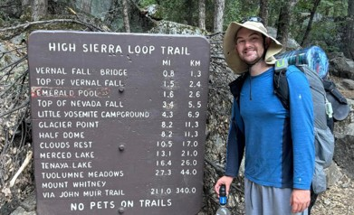

I love observing and exploring the natural world, asking questions, and conducting experiments to test hypotheses! My Master's research at UCLA focused on the relationship between bedrock weathering and soil production rates, using cosmogenic nuclides and near-surface geophysics. Moving forward, I aim to integrate remote sensing, seismic refraction surveys, and electrical resistivity to better understand vegetation responses to drought across variations in lithology and topography in Mediterranean climates.